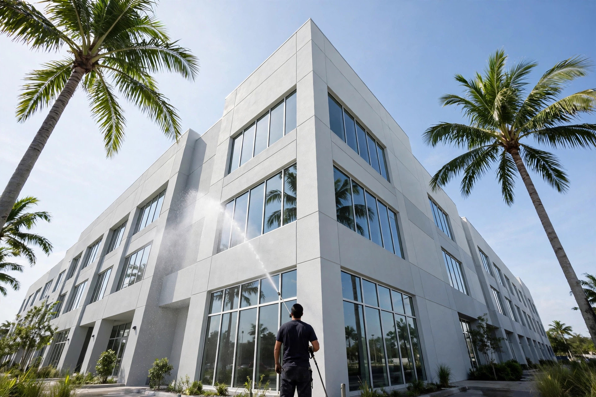
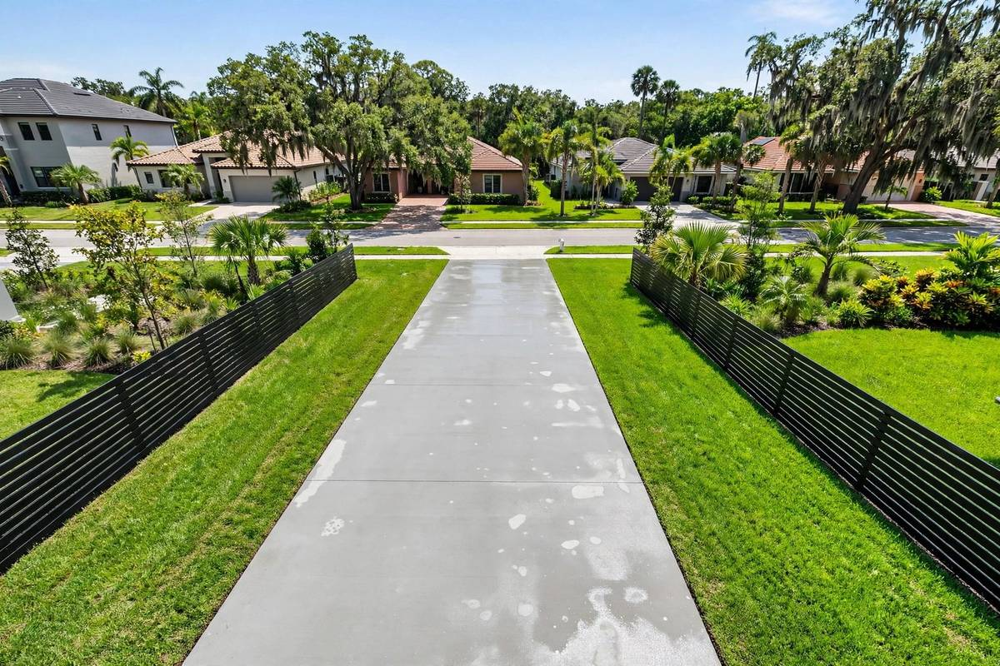
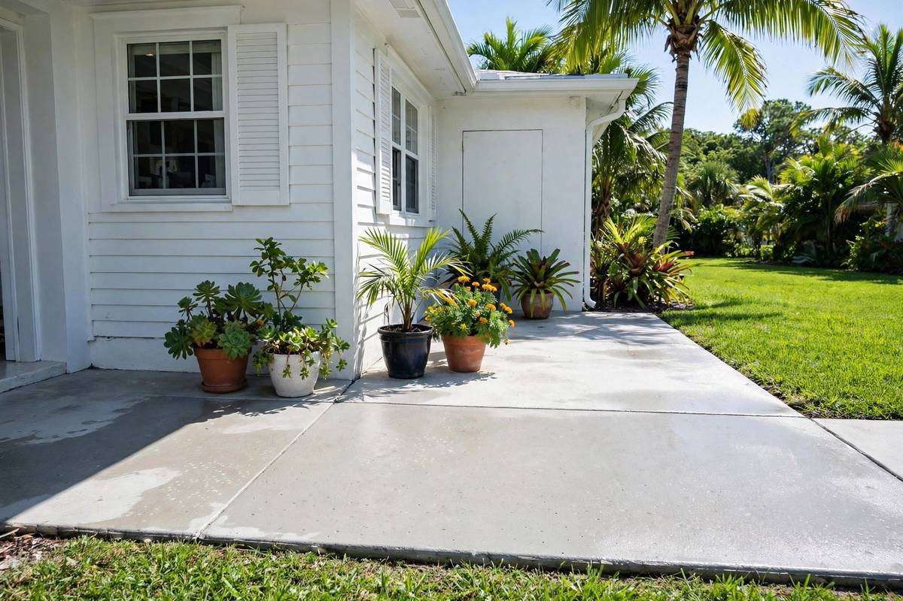

Algae & Mildew
Algae and mildew can make walkways look dirty and feel slippery.
Jacksonville, FL Exterior Cleaning
Exterior cleaning for Jacksonville shops, offices, restaurants and other business properties — storefronts, walkways and parking areas checked first, and planned around your business hours where possible.
7-Day Satisfaction Check
Professional Commercial Exterior Cleaning
First impressions matter for a business. Dirty walkways, stained building exteriors, and grimy storefronts can put customers off before they walk in.
Our commercial exterior cleaning service in Jacksonville, FL is for shops, offices, restaurants, and other business properties. We clean suitable building exteriors, walkways, entrances, and parking areas.
We work Monday to Friday, 9:00 AM to 4:00 PM Eastern Time. Tell us your business hours when you request a quote, and we will plan the work around your customers where possible.



What Builds Up Outside a Business?
Jacksonville’s rain, pollen, humidity and foot traffic leave their mark on every storefront and walkway. Here is what we see most — and commercial exterior cleaning can help with it.
Algae and mildew can make walkways look dirty and feel slippery.
Grease and food residue can build up near restaurant entrances and service areas.
Oil, tire marks, and general staining can build up in parking areas.
Rain, pollen, and outdoor exposure can stain building exteriors.
What We Clean
Every surface gets the method that suits it. Here is what your commercial exterior cleaning can cover.
Storefront glass, signs, and entrances can be cleaned to help a business look more welcoming.
Suitable building exteriors can be cleaned to remove dirt, algae, and weather buildup.
Walkways, entrances, and steps can be cleaned to remove dirt, algae, and staining.
Suitable parking areas, curbs, and dumpster pads can be cleaned. Tell us the size when you request a quote.
Restaurants, offices, and other business properties can arrange regular exterior cleaning.
Why a Jacksonville Storefront Gets Dirty So Fast
A storefront in Jacksonville never gets a day off. Every customer who walks in crosses the same entrance, rain and pollen settle on the glass and the signs, and summer storms leave dirt on the walkway — and the buildup grows layer by layer, long before anyone notices. In Florida humidity, algae can grow on a shaded walkway and make it look dirty and feel slippery, while grease builds up quietly near a restaurant entrance and oil spots collect where cars park every day.
That is why a quick rinse is rarely enough. The buildup is not only dirt sitting on top — algae, grease and old stains have settled into the surface, and each surface needs the method that suits it. We check the surface and the buildup first, then clean with a controlled method, and rinse and inspect at the end. Results can vary based on the type, extent, and condition of the buildup, and we will tell you what to expect before we start.
Good to know: when you request a quote, tell us the size of the area, the surfaces, and your business hours. The work is planned around your customers where possible, within our Monday to Friday, 9:00 AM to 4:00 PM Eastern Time hours — and if you want cleaning on a regular schedule, tell us how often when you request a quote.
Four Signs to Look For
Walk up to your business the way a customer would. If any of these sound familiar, the outside is telling you something.
Entrances take the most foot traffic and show dirt and staining first — before anyone sees inside.
Algae and mildew on a walkway look dirty, and can make it feel slippery when wet.
Rain, pollen, and outdoor exposure stain a building exterior a little more every month.
Grease and food residue build up near restaurant entrances and service areas, and a rinse alone does not remove them.
Why Cleaning Your Business Exterior Matters
A clean exterior changes how the whole business looks. Here is what it does.
Clean glass, signs and entrances help a business look professional and welcoming before a customer walks in.
Walkways, entrances and steps cleaned together make the whole property look cared for, not patched.
Cleaning buildup early gives it less time to settle in — older stains are harder, and results can vary.
Tell us how often you want cleaning when you request a quote, and we can plan a schedule for your property.
Our Process
Five careful steps, every time. No shortcuts, no guesswork on your property.
We look at the surfaces, material, condition, and visible buildup before choosing a cleaning approach.
Surrounding areas and suitable items are considered. Movable items may be moved or protected where needed.
When suitable, a cleaning treatment can help loosen dirt, algae, mildew, and other buildup.
We clean using a method suited to the surface material and condition. Unnecessary pressure is avoided.
After cleaning, we rinse and inspect the area to review the visible result.
The Right Method for Each Surface
The surface and the buildup are checked first, then a cleaning treatment that fits them is applied and given time to work. The area is cleaned with a method suited to the surface, then rinsed and inspected — so the result is checked, not guessed.
Pressure alone can damage a surface it does not suit — storefront glass, signs, painted exteriors and softer surfaces all need a different approach. That is why the surface is checked first, and pressure is only used where it suits the surface.
Which method is right for your property? There is no single method for every surface. The right approach depends on the surface, the buildup and its condition. More pressure does not automatically mean better cleaning — on the wrong surface, it usually means damage instead of a clean result.
Get a free commercial exterior cleaning quote.
Pro Tip
Before you ask for a quote, note down your business hours, the size of the area, and which surfaces need cleaning — storefront, walkway, entrance, or parking area. Tell us who to contact on the day, and where the water supply is. That way we can plan the work around your customers where possible, within our Monday to Friday, 9:00 AM to 4:00 PM Eastern Time hours, and give you a quote based on your property.
Shops, Offices & Restaurants
Every business is different. Here is how commercial exterior cleaning fits different kinds of Jacksonville businesses.
Shops and storefronts in Jacksonville and nearby communities can have their glass, signs, and entrances cleaned to look more welcoming.
Offices and other business properties can have building exteriors, walkways, and entrances cleaned on a schedule that suits them.
Restaurants can arrange cleaning for entrances, walkways, and service areas where grease and food residue build up.
Small business properties in Jacksonville and nearby communities can arrange exterior cleaning for their storefront and walkways.
Other business properties in Jacksonville and nearby communities can request a quote based on their size, surfaces, and condition.
Who We Clean For
Some properties need more than a one-time wash. Here is how commercial exterior cleaning fits storefronts, HOA communities and managed properties.
Storefront entrances, glass, signs and walkways can be cleaned so the first thing customers see looks welcoming. Tell us your business hours so we can plan around your customers.
Clubhouses, pool areas, walkways and entrances in HOA communities can be cleaned as part of routine upkeep. Tell us what the board needs cleaned and when.
Property managers can arrange cleaning across more than one property with one contact and one schedule. Tell us the properties, the surfaces, and the timing when you request a quote.
Where We Work
We clean business exteriors across Jacksonville and nearby communities. Find your area below.
Before We Arrive
A few small steps before we arrive help the cleaning go smoothly.
Commercial Exterior Cleaning FAQs
Shops, offices, restaurants, and other business properties in Jacksonville and nearby communities.
We work Monday to Friday, 9:00 AM to 4:00 PM Eastern Time. Tell us your hours and we will plan around them where possible.
Yes. Tell us how often you want cleaning when you request a quote, and we can plan a schedule.
Pricing depends on the size, condition, and type of surfaces. Request a quote for pricing based on your property.
It helps if someone is on site to arrange access and water supply. Tell us who to contact on the day.
The size of the area, the surfaces to be cleaned, your business hours, and who to contact on the day — that helps us give you a quote based on your property.
Grease and food residue near restaurant entrances and service areas can be treated as part of commercial exterior cleaning. Results can vary based on the type, extent, and condition of the buildup.
Yes. Storefront entrances, glass, signs and walkways can be cleaned. Tell us your business hours when you request a quote so we can plan around your customers.
Yes. HOA common areas and managed properties can be cleaned on a schedule. Tell us which properties need cleaning and what the board or owner wants done when you request a quote.
Working hours are Monday to Friday, 9:00 AM to 4:00 PM Eastern Time. 7-Day Satisfaction Check: if a spot remains within 7 days, we will re-clean that spot free.
More Exterior Cleaning
One visit can cover more than one area. See our other Jacksonville cleaning services.
Ready to start? Tell us the size of the area, the surfaces, and your business hours.
7-Day Satisfaction Check: if a spot remains within 7 days, we will re-clean that spot free.
Working hours: Monday to Friday, 9:00 AM to 4:00 PM Eastern Time.